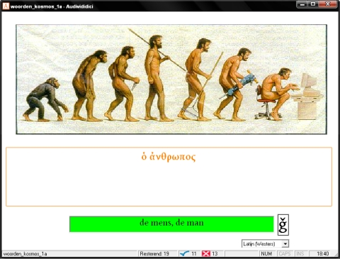

Audivididici is een gratis overhoorprogramma met de mogelijkheid om naast vraag en antwoord
ook afbeeldingen en geluid in te voeren.
Je spreekt dus meer zintuigen of kanalen aan bij het leren van woorden en zal ze zo waarschijnlijk gemakkelijker kunnen onthouden.

Leuker en beter leren
Dit programma laat in tegenstelling tot veel traditionele overhoorprogramma’s ook een afbeelding zien en een geluid (de uitspraak, muziek, een effect) horen.
Hierdoor worden bij het leren meerdere kanalen aangesproken en is de kans dat je het woord onthoudt veel groter.
Ook het gebruik van cursivering of kleur bij de weergave van woorden kan helpen (bijvoeglijke naamwoorden groen, werkwoorden rood etc.).
Het scala aan ezelsbruggetjes wordt zo veel groter.
Leerlingen leren hier het meest van als ze in groepjes op zoek gaan naar die woorden, geluiden en kleuren die voor henzelf werken!
Idee
Een CD-Rom met een cursus Italiaans bracht ons op het idee voor Audivididici.
Een reeks voorwerpen kwam voorbij over het scherm, terwijl het bijbehorende Italiaanse woord in beeld verscheen en een stem (van een sprekende heer of dame onderin het scherm) de juiste uitspraak liet horen.
Waarom zouden leerlingen ook niet Engelse, Franse, Duitse, Latijnse of Griekse woorden kunnen leren met een dergelijk programma?
Audi-wat?
De naam is geïnspireerd op de bekende uitspraak van Julius Caesar: “veni, vidi, vici”, hetgeen betekent:
“Ik kwam, ik zag, ik overwon.”
Deze uitspraak deed hij in het jaar 47 v.Chr. in een boodschap aan de senaat in Rome naar aanleiding van zijn overwinning in de slag bij Zela.
In Caesars voorstelling van zaken was zijn optreden buitengewoon effectief.
Audivididici is een samensmelting van drie Latijnse werkwoordsvormen:
audivi: “Ik hoorde”, vidi: “Ik zag”, didici: “Ik leerde”
We hopen dat het leren met Audivididici een net zo succesvolle strategie zal blijken te zijn als die van Caesar in de slag bij Zela!
Kijk eens rond!
We nodigen u van harte uit om rond te neuzen op deze website om te ontdekken hoe u gebruik kunt maken van dit programma!
Audivididici is in te zetten voor alle talen, en met enig creatief gebruik ook voor vele andere disciplines.
Gebruik het menu bovenaan de pagina om te navigeren. Veel plezier!